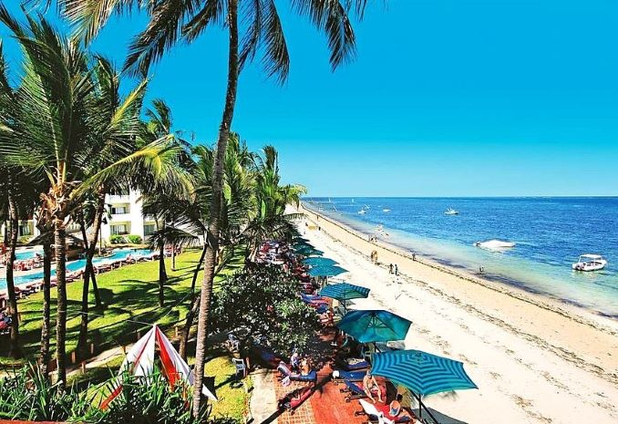

Shadrack Onyango
About Me
Hi there👋. I am Shadrack Onyango born and raised in Kenya. I am a passionate auto mechanic by profession who transitioned to the field of Software Development. I enjoy socializing, serving others, playing rugby and swimming. I am passionate about AI and technology. I enjoy learning new things everyday 🧑💻 ,empathizing with users and solving real-world problems.
Mombasa, Kenya 🛸

I live in Mombasa, Kenya. During my free time, I walk along the shores of the coastal beach and enjoy the glamorous beauty of marine life 🐳🐬🐟. Mombasa Is the third largest city in Kenya. The widely spread religion is Islam. Mombasa island is best known for its culture, swahili dishes, sandy beaches and the vibrance around.